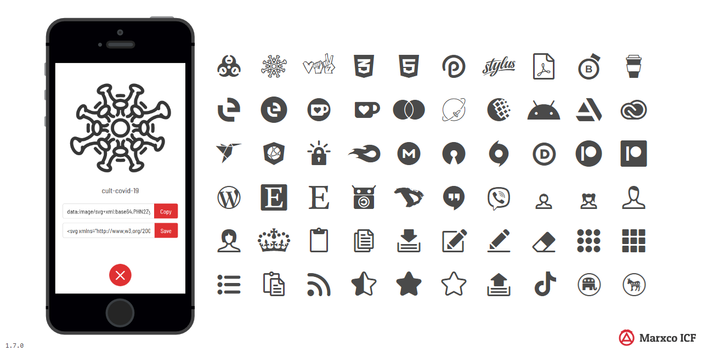
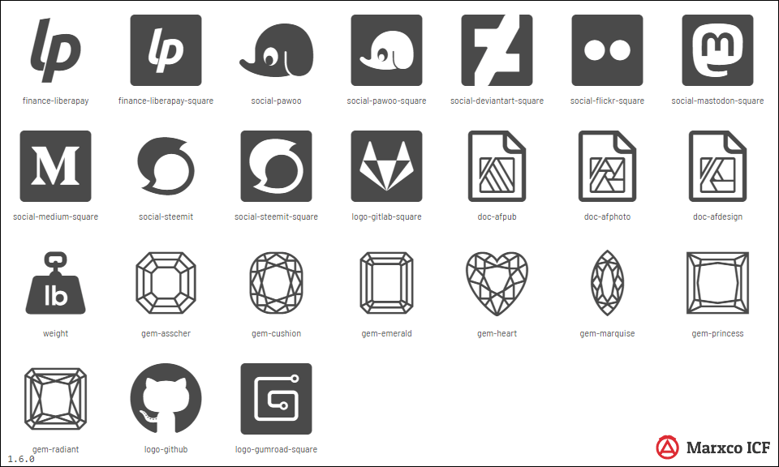

Changelog
1.7.0 - 2020-11-07

Added
cult-biohazardcult-covid-19cult-jive-belarusdev-js-deliverdev-css3-altdev-html5dev-processwiredev-stylusdev-wordpressdoc-pdffinance-blockonomicsfinance-buymeacoffeefinance-embily and finance-embily-circle.finance-ko-fi-circlefinance-ko-fifinance-mastercardfinance-patreon, finance-patreon-circle and finance-patreon-square.finance-ttmcardfinance-webmoneylogo-android-2019logo-creative-cloudlogo-freelancer_comlogo-lets-encryptlogo-mediafirelogo-mega-nzlogo-openinitiativelogo-originmarket-etsy-square and market-etsy.market-f-droidsocial-artstationsocial-disrootsocial-tiktoksoftware-hangoutsoftware-viberuserpic-boyuserpic-girluserpic-manuserpic-womenpolit-democratic-party-uspolit-democratic-party-us-modernpolit-republican-party-uspolit-ukclipboardcopydownloadedit-objectediterasegallery and gallery-circles.listpasterssstar, star-solid and star-half.upload
1.6.0 - 2020-02-24

Added
finance-liberapay and finance-liberapay-square.social-pawooandsocial-pawoo-square.social-deviantart-squaresocial-flickr-squaresocial-mastodon-squaresocial-medium-squaresocial-steemit and social-steemit-square.gem-asschergem-cushiongem-emeraldgem-heartgem-marquisegem-princessgem-radiantdoc-afpublogo-gitlab-squarelogo-gumroad-squareweight
Changed
- Removed loose parts from
gem-oval and gem-round logo-githubdoc-afphotodoc-afdesign- Extra `title` and `defs` tags removed from SVGs.
- Code has been rewritten with ECMAScript 6 to match the requirements of Gulp 4.x and Node.JS 12.
- Icons selectors now are sorted by category and iconname.
1.5.0 - 2019-11-04
Added
gems category in range 62905-63004.gem-ovalgem-peargem-roundcult-skullcult-jack-o-lantern